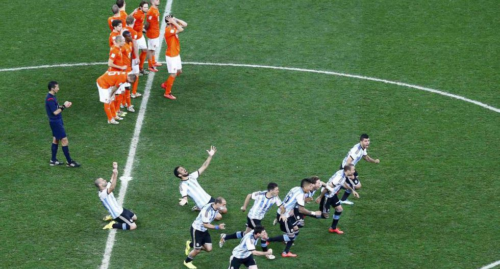
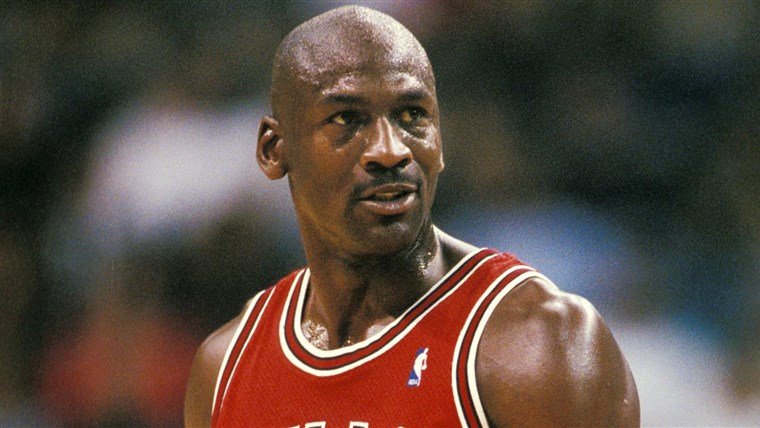

MOMENTO RETRO
Maxi Rodriguez con su histórico penal mete a Argentina en la final de la Copa del Mundo Brasil 2014
La costumbre de encender la antorcha olímpica se remonta a los Juegos
Olímpicos de
la Antiguedad. El fuego fue reintroducido en los Juegos Olímpicos de Ámsterdam 1928 y
desde entonces ha sido parte fundamental de los Juegos Olímpicos Modernos.
¿Qué significa? ¿dónde nació ese rito? ¿Desde cuándo este simbolo recorre
miles de kilometros antes de ser utilizado para encender el pebetero en la ceremonia
inaugural?
Aqui te contaremos todo
FRASE DE LA SEMANA
"Siempre pensaba que habría alguna persona en la grada que era la primera vez que me veía jugar en directo y simplemente no quería defraudar a esa persona ni a mis fans ni a mi equipo." (M.Jordan)
FILM DEL MES

Nueva jugada es un sitio Web que pretender ser un espacio para todos los aficionados del deporte. Esperamos puedas sentirte complacido de conocer grandes historias de distintas disciplinas.
Copyright 2020